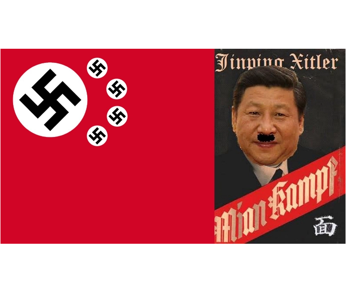

This is began with a high building in china west region, a capital city called urumqi .
people locked in high building and couldn't escape when the fire breaking
then, people in urumqi took to the street asking for a city wide unlock, and shanghai people mourning for people in urumqi building
then police came , people gathering urumqi middle road in shanghai , started to get drived away
then more and more people supporting them and raising a blank paper to express their demands! well done, stand with these brave people
